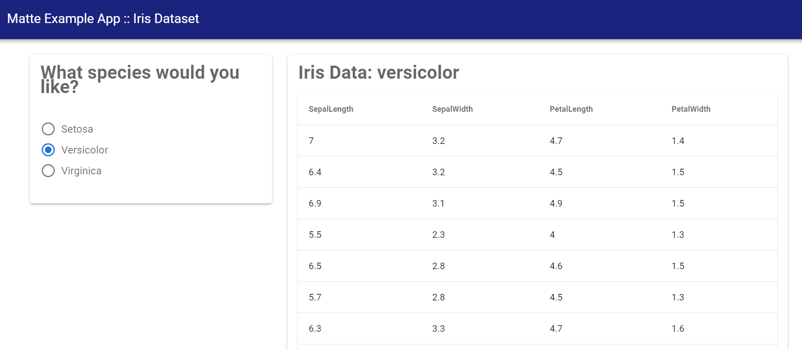

Displaying DataFrames
This guide looks at embedding and displaying DataFrames in your Matte app.
Example app and data
This guide will use the built-in example app called iris. Create a copy locally to work on by running:
matte_example("iris", "iris")which will create the example in a new folder called iris. You can change the second argument to change the path where the example is created.
We will use the iris dataset from the RDatasets package. This is imported at the top of the Server module:
module Server
using RDatasets
iris = dataset("datasets", "iris")
...
endIncorporating a DataFrame in your UI
Matte has a built-in way to display tables of data in your app: the datatable_output This takes a single argument, which is the id of the output (which, of course, corresponds to a function in the Server module).
You can see this element in the main_panel of the provided example:
function ui()
sidebar_layout(
side_panel(
...
),
main_panel(
...
datatable_output("iris_df")
)
)
endDataFrames on the backend
As with all Matte outputs elements, we need a function in the Server module called iris_df, since this is the id we gave to datatable_output. This function should return a DataFrame (or any other Tables.jl compatible type).
In the included example, we are using an input variable called species to filter the iris dataset. This isn't particularly interesting, but provides a little interactivity for the example.
function iris_df(species)
if species != nothing
iris[iris.Species .== species, Not(:Species)]
else
nothing
end
endThis function simply returns a DataFrame, or, if the user hasn't yet selected a species to filter by, nothing.[1]
Trying it out
Run the app (by include/includeting the app.jl file and running run_app(IrisApp)). Once you select a species to filter by, you'll see something like this:

The data table in the UI is interactive – you can sort by columns – and limits the number of printed rows to improve user experience.
In the next guide we'll look at the other way to present data to your users: plotting!
- 1A return result of
nothingtells Matte not to update the UI.